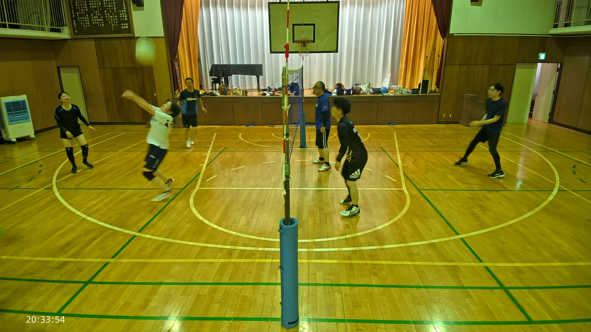
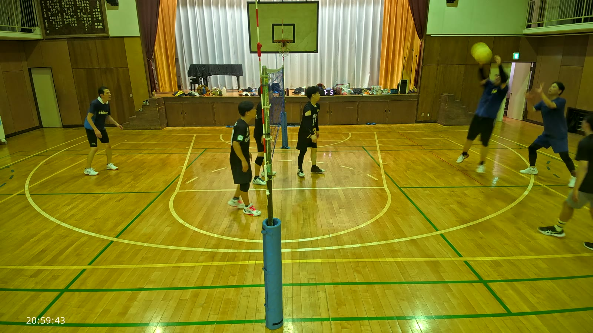
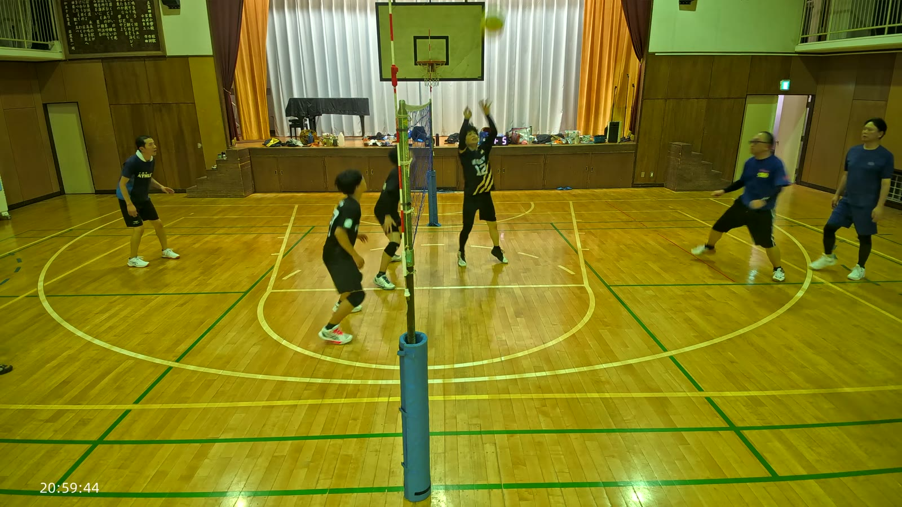
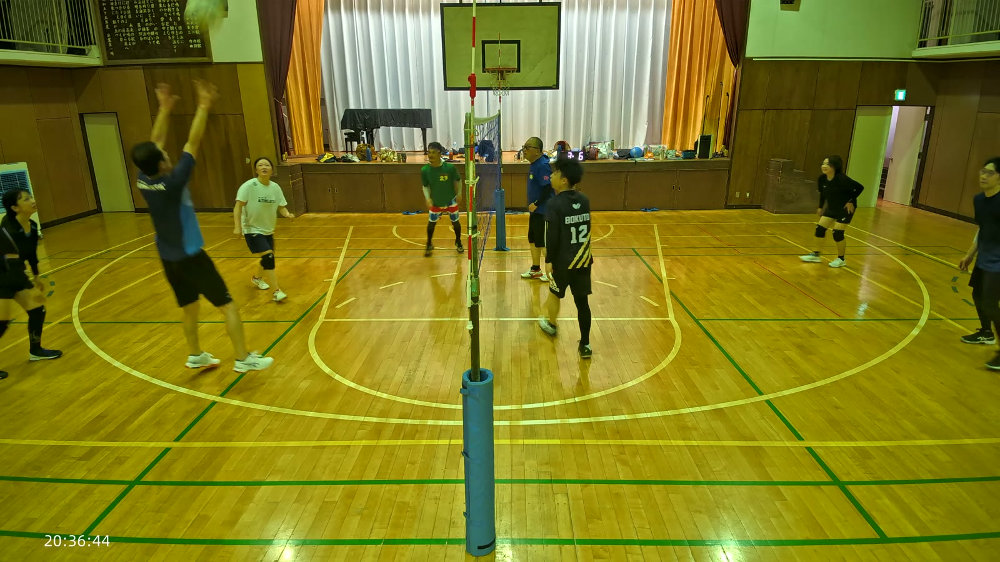
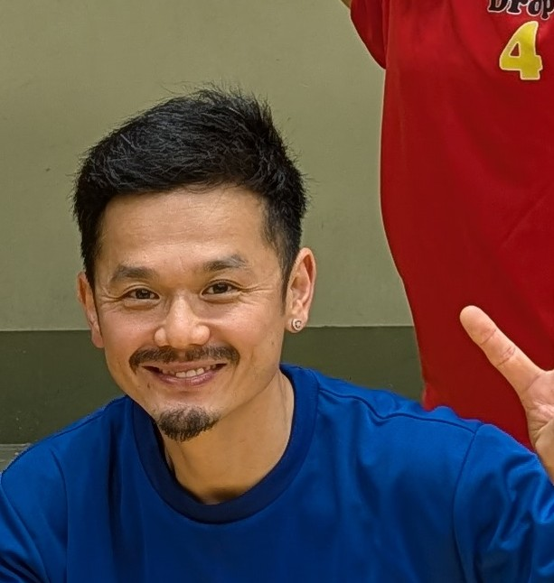
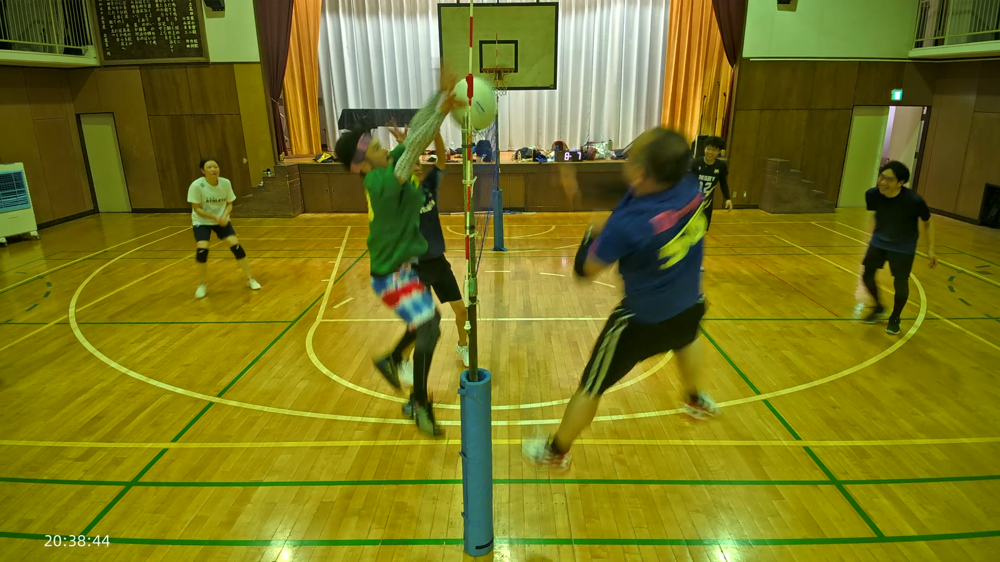
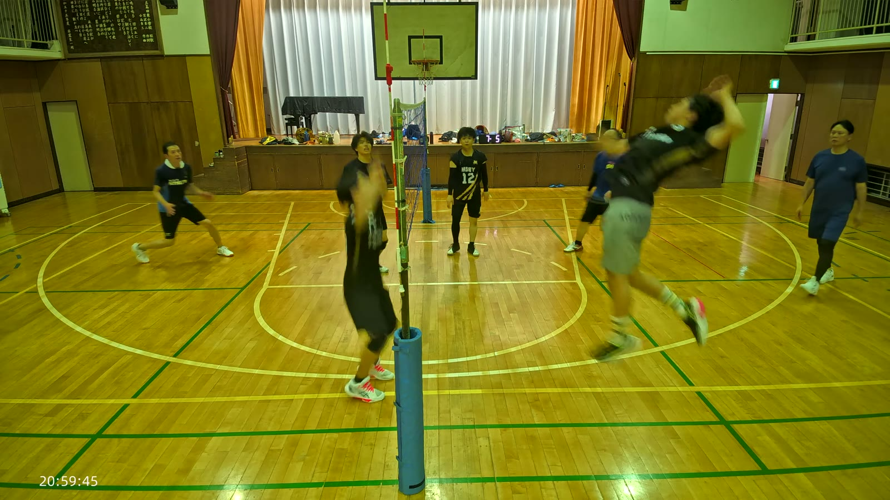
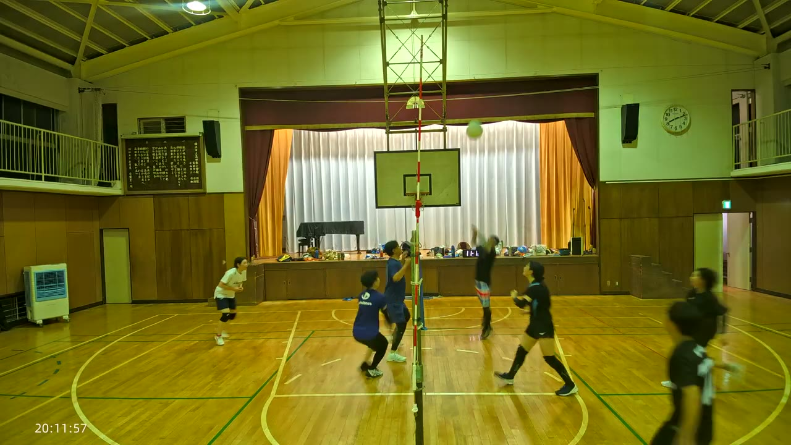
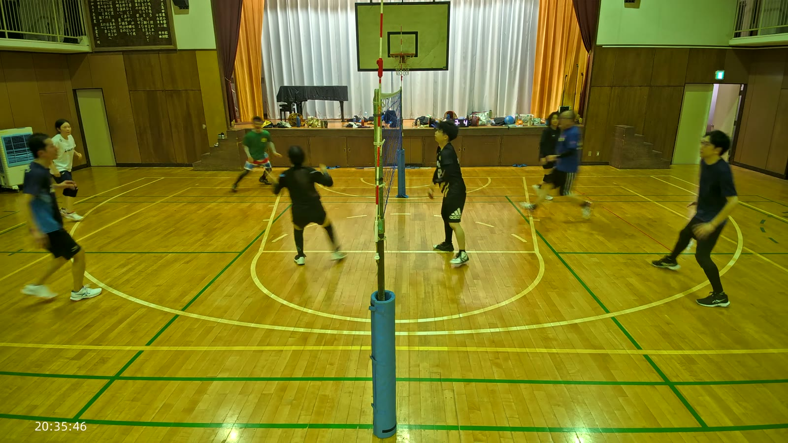
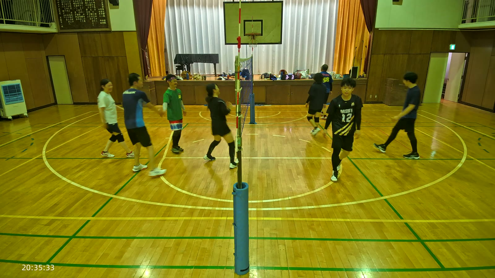

これは詳しい版です。時刻・回数・根拠がすべて入っています。結論だけ知りたい方は 要約のページへどうぞ。
この講評の前提を先に断っておきます。
2026年7月25日(金)の夜、20:02 から 21:01 までのおよそ1時間。体育館のステージがある側にネット支柱を立て、その上あたりにカメラを据えて撮られています。ラリー区間は124、プレー時間の合計は28分(全体の48%)。裏を返せば半分以上は動いていない時間で、実際、記録を通して読むと「間」の長さがこの日の映像の性格をよく表しています。
電光表示(ステージ上)を追うと、この日の流れはおおむね次のように読めます。
| 時間帯 | 内容 | 手がかり |
|---|---|---|
| 20:03〜20:13 | ゲーム(0-0 から 11-14 前後まで) | 表示が単調に増加 |
| 11:33〜12:31 | 休憩(約3分) | 表示が 2:56 から1秒ずつ減少 |
| 12:46〜16:47 | アップ/ドリルの時間帯 | タイマーが 1:43→0:00、床に複数のボール、入れ替わりが激しい |
| 16:47〜26:07 | ゲーム(2-2 → 9-8、続いて 9-9 → 12-15) | 表示が単調に増加 |
| 26:25〜29:30 | 休憩(約3分) | 表示が赤い得点から紫のカウントダウンへ切替 |
| 29:52〜31:05 | 入れ替えと打ち合わせ | 表示が 0-0 で固定 |
| 31:19〜40:06 | ゲーム(1-0 → 14-11) | 表示が単調に増加 |
| 40:42〜44:57 | 休憩(3:00 セット、2:44→0:03) | 表示がコロン付きの時計形式 |
| 46:03 | 得点 0-0 にリセット、新しい試合 | 表示形式が「1桁 1桁」へ |
| 46:36〜52:10 | ゲーム(0-0 → 9-8) | 途中 46:36 前後は軽い打ち合い |
| 52:19 | 再び 0-0 にリセット、チームの組み替え | かえでくん(77番、ゲスト・名簿になし)のコートが入れ替わる |
| 53:43〜58:35 | ゲーム(1-0 → 9-6) | 最後まで表示が増加 |
| 58:37〜58:42 | ネット支柱に人が取り付き、撤収に入る | 動画がここで終わる |
つまり「アップ → 練習ゲームを4〜5本 → 3分の休憩を挟みながら回す → 片づけ」という組み立てです。得点表示は得点と休憩タイマーの兼用で、しかも選手が手で操作しています(34:58 にやっさんが表示のすぐ横に立ち、その2秒後に数字が変わる。やまさん(58番)も同じ位置へ何度も歩いている)。数字が変わった時刻とプレーの時刻は数秒ずれる、という前提で読む必要があります。
チーム分けは固定ではなく、ゲームごとに組み替えられています。20:25 前後の休憩を境に参加者の多くが黒基調のウェアに着替えており、それ以前の「白ATHLETA(あき)」「紺phiten(こもりん)」といった服装ベースの識別は途中から通用しなくなります。これは休憩のたびに着替える Drop の通常の習慣で、不可解な出来事ではありません。人物の追跡が難しくなっているのは、この通常の着替えが理由です。
| 賞 | 受賞 | 理由 |
|---|---|---|
| MVP | あき(8番) | この日ただ一つの「狙って打った」アタック。声かけも最多 |
| ファインプレー賞 | やまさん(58番)・こもりん | 区間121でレシーブ→セットが2段そろった |
| 縁の下賞 | やっさん | モップ、得点表示、説明役、ネットの調整 |
| 声出し賞 | かずお(25番) | あきと同時に声を出しているのが確認できた唯一の相方 |
| 珍プレー賞 | カメラ持ち上げ事件 | 持ち上げた人は特定できず |
| また進化したで賞 | 該当なし | 比較する過去の記録がない |
決め手は 31:41 のバックトスです。後ろ向きに、見ていない側にいるやっさんへ正確に上げました。やっさんはそれを相手の正面ではなく右奥の空いたスペースへ打ち込んでいます。決めたのはやっさんですが、この得点を作ったのはあきのトスの精度でした。(2026-08-16 訂正: 当初「あきが打ち込んだ」と書いていました。静止画ではバックトスの反る姿勢と強打の振りかぶりが区別できず、取り違えていました)
人物の特定について。あき(8番)とかずお(25番)は同じ ATHLETA のシャツを色違いで着ており、当初この2人を取り違えていました。4Kで確認し直したところ、この一枚の中に白い「8」のシャツの打ち手と、その奥に青い ATHLETA のかずおが同時に写っています。2人が同じコマにいるので、取り違えの余地はありません。

31:41声掛けの記録も、この日いちばん多く残っています。31:25(口を大きく開けて声を出しているのがはっきり写る)、34:31(かずおと同時)、49:24(右腕を伸ばして味方を指す)、57:34(区間121が決まった直後、両腕を前に出して声を上げる)。
区間121(57:30〜47)の入口の2秒です。57:30、右コートのやまさんが両腕を頭上に構えて落下点の真下に入りました。続く 57:31、黒い「12」のシャツのこもりんが頭の上で三角に構えたオーバーで上げています。
攻撃の形をきちんと作れた、この日でもよくそろった一連です。このあと打ったボールは、左コートの77番 Kaede にブロックで止められました。点は取られていますが、そこまでの運び方は良い形です。(2026-08-16 訂正: 当初「2段そろった場面は数えるほどしかない」と書いたが、数えずに書いた印象でした。実際はこのパターンは多くあります)

57:30
57:3134:31、かずお(青の ATHLETA)とあき(白の ATHLETA)の2人が、同時に上を向いて口を開けています。この日いちばん明確な声掛けの証拠で、声を出している相方まではっきり写っているのはこの場面だけでした。
ただし、声は静止画にいちばん写りにくいものです。実際にはもっと多くの人が出していたはずで、この賞は「記録に残った範囲で」の受賞であることを断っておきます。次回からは音声の書き起こしも判断に使います。

34:31
プレーの質だけで選ぶなら、この日いちばんはやっさんでした。それでもこの賞にしたのは、プレー以外の働きのほうが、この人の場合むしろ際立っていたからです。
背番号23は、briefing にある「赤青チェックのハーフパンツが目印」という事前情報と、映像から読み取れた特徴(緑の「drop 23」シャツ、赤青チェック/タイダイ柄のハーフパンツ、白いヘッドバンド、黒のロングソックス)が複数のバッチで一致しています。この日の背番号のうち、名簿と照合して安心して実名を出せるのは、やっさん(23番)とやまさん(58番)くらいです(6番と12番の事情は「6. 気づき・ハプニング」に書きます)。
技術と場の運営の両方で、関与量が突出しています。

36:31課題も書いておきます。38:13 では対面のボールに対して腕を下ろしたまま立っており、反応にムラがあります。ネット際の判断は、良い時と抜ける時の差が大きい。ただしそれを差し引いても、この1時間で最も多くコマに写り、最も多くの役割を担っていたのはこの選手でした。
プレーそのものではありませんが、この日いちばん記録に残ったのはこれです。
22:19 まではごく普通のゲームでした。ところが 22:22、画面がまったく別の景色に切り替わります。体育館の反対側の壁、肋木、別のバスケットゴール、冷風機。その手前をやっさんがヘアバンド姿でカメラのほうへ歩きながら笑っています。誰かがカメラごと持ち上げて運んでいるのです。
そして 22:36、画面が大きく傾き、右下に女性の顔が至近距離で写り込みます。まっすぐレンズを見ている。続く 22:39、今度は男性の顔が画面の下半分を占めるほどの近さで、目を見開いてレンズを覗き込んでいます。完全な「自撮り状態」。22:43 にカメラは新しい位置へ据え直され、以降は支柱が画面横約570pxに来る、より低く近い画角に変わりました。
面白いのは数字のほうで、この10秒を含む区間44の盛り上がり度は 3(担当範囲の最低値)。機械の計測では「何も起きていない」ことになっている時間に、この日いちばん賑やかな絵が入っていました。この傾向は音声データを重ねても裏づけられます(4章の盛り上がり度に関する注記を参照)。
機械的な計測での最高値は区間121(57:30〜57:42、盛り上がり度100)でした。記録を読んで中身を確かめたところ、この区間は数値にふさわしい内容を伴っています。そのまま採用します。
流れはこうです。

57:32なぜこれがこの日の白眉なのか。この1時間を通じて、Drop の課題は一貫して「つなぎは上がるが攻撃の形にならない」「ブロックは一人・しかも片腕」でした。区間121は、その両方が同時に解けた唯一に近いラリーです。真下に入ったレシーブ、オーバーでのセット、両腕を揃えて正面から跳んだブロック、そして決まった直後の共有。評価観点の「良い」が3つ重なっています。
ただし、跳んだのはやはり1人だけです。57:31 のコマでは左コートのネット際に2人が並んでいたので、二人で跳ぶ時間はあったように見えます。結果的に1枚で仕留めていますが、「二人で対応できているか」という観点では、まだ届いていません。また、跳んだ選手がかえでくんか NEWERA シャツの選手かは、ブレていて特定できませんでした。
なお、盛り上がり度は基本的に当てになりません。同じ日の区間113(値98)は8秒間ラリーが一度も起きず、選手がネット越しに立ち話をしていただけでした。区間58(値90)は完全な休憩で、コートを歩いているだけ。区間91(値56)は無人のコート。逆に区間98(値19)は15秒続いたラリーでした。この指標は音量と動きの量を拾っているだけで、値が高い区間の中にたまに本物が混ざっている、というのが正確な言い方です。区間121は、その「たまに」に当たりました。
音声のかけ声データを突き合わせると、この「当てにならなさ」がさらにはっきりします。声がはっきり確認できたのに盛り上がり度の値が低い区間が複数あります(区間21=10、区間29=13、区間30=20、区間42=27、区間74=25、区間89=37)。音量では拾えていませんでした。逆に、盛り上がり度が90を超えているのに、かけ声データからは声を拾えなかった区間もあります(区間2=97、区間67=99、区間72=94、区間81=94、区間84=95 など)。つまり盛り上がり度は「音の大きさ」を測っているのであって、「実際に沸いたかどうか」を測っているわけではありません。今後この指標を使うときは、単独ではなく歓声の言葉(音声の書き起こし)と組み合わせて判断すべきです。
この賞は過去の記録と引き比べて、はっきり読み取れる変化があった選手にだけ贈るものです。今回が Drop の動画としては初めての分析で、比較対象となる過去の観察がありません。したがって今回は「該当なし」とします。
次回のために、この日の選手ごとの観察を player-history.md に技術項目別で残しました。次に同じ選手を分析するとき、そこと引き比べてください。
Minato と入った黒シャツ+グレーのハーフパンツの男性と、オレンジ「Drop」+緑の「6」(または胸に赤字 Drop)のキャップの女性。19:07、23:16、24:08 のコマで、両者が同時に写っています。名簿上の重複(正メンバーのゆきよ / ゲストのみなと)が、映像でもそのまま起きています。終盤(54:04、56:09、57:36)では Minato 表記がはっきり読めており、この時間帯の6番はみなととみて差し支えないと考えられます。ただし batch-08 では同じ黒シャツ系で Hinata 6 と読めたコマもあり、読み取りが揺れています。6番は番号だけでの特定を避け、本文では断定せず「6番」と表記します。MSBY、背中が BOKUTO 12 で、アニメ『ハイキュー!!』の MSBY ブラックジャッカルのレプリカではないか、という指摘もあります。前後で違う文字が見えますが同じ一着です。以降の本文でも「12番」のまま表記し、名簿の実名とは結びつけません。drop + 緑の「31」、女性)は briefing の「ゆりこ(要確認)」に対応する可能性がありますが、要確認のままです。drop-review-criteria.md の3分類に沿って書きます。太字はkenbohが加筆した観点で、そこを重点的に見ました。
観点:落下するボールの真下でボールを受けているか。面を早く作り、勢いを吸収できているか。
良い側。真下に入れているコマは、この日はっきり確認できただけで10枚近くあります。4:43(紺シャツ)、8:45(サイドライン際まで下がりながら入り直してオーバー)、25:07(右コート奥、両手を頭上に構えて真上のボールを処理)、39:02(腰を落として腕を組む)、40:00(両腕をまっすぐ揃えて真下)、49:16(やっさん、ボールが来る前から膝を落として面を作る)、57:30(紺無地シャツ、両腕を頭上)、58:09(やっさん、正面で低く)。
課題側。同じ日の同じチームで、逆の形も繰り返し出ています。25:39(体がボールの下ではなく半歩外、片腕で届かせる)、33:33(高すぎて腕を伸ばしても届く位置にない)、37:25(下から力任せに弾き上げ、ボールが2階ギャラリーの高さまで飛ぶ)、58:32(体が横を向いたまま手だけ出す)。
まとめると「できないのではなく、ばらつく」。同じラリーの中に良い形と悪い形が並んでいる場面すらあります(25:35 で腰を落として下から入れた4秒後、25:39 で片腕を伸ばしている)。なお、面の作り方そのものは0.5秒間隔では写らないため、「面が良かったか」は評価できていません。
観点: アタッカーが打ちやすいよう、ネットから少し離した山なりの軌道を作れているか。
この日いちばん材料が乏しかった項目です。「これはトスだ」と言い切れる場面がほとんどありません。明確に成立したのは、

9:44悪い側の典型は 18:08 で、ネットに近すぎる位置でボールを扱った結果、6秒後の 18:14 にボールがネット直下の床に転がっています。つなぎがネット際で潰れた形。53:47 では、つなぎが味方の攻撃に使える高さ・位置ではなくコート左へ逃げていきました。
そして最大の問題は次項と地続きです。多くの場合、トスの前に「上げすぎたつなぎ」があります。
観点:相手がいないところを正確に狙って打っているか。芯を捉えてドライブ回転をかけ、コート内に落とせているか。
まず、打てている選手はいます。
しかし、これらは全体から見ると例外です。この日を通じての最大の技術課題は、
各バッチが独立に同じ結論を書いています。6:01〜19、19:49〜14、24:03〜21、26:00〜16、32:48、33:33、34:48、39:25、40:00〜15、47:56、48:02、51:04、57:13〜28。ボールが天井・バスケットゴールのリング・バックボードの高さ、時には画面の外まで上がるコマは、確認できただけで13回以上あります。そしてそのどれの直後にも、助走してアタックに入るコマが一枚もありません。
高く上げること自体は、落下点に入る時間を作る良い判断です。実際、それで拾い切っている場面も多い。ただ、それが攻撃への転換ではなく「相手のミス待ち」に固定してしまっている。さらに 33:33 のように、高すぎて自分たちも落下点に入れなくなり、守りとしても機能しなくなり始めている場面まで出てきました。ここは分岐点だと思います。
観点:強く、正確に打てているか。 / ミスが多く、ネットにあたったりアウトになったりしていないか。
この項目は、静止画からの評価にはっきり限界があります。理由は3つ。
そのうえで書けることは次のとおりです。
Minato 表記から、みなとの可能性)が腰を落として下から打つサーブの体勢を取っています。強いサーブではなく、ミスを避ける入れ方。ただしこの日の展開ではそれで十分ラリーが終わっています。サーブレシーブ側が1〜2本で返しきれていないので、サーブが弱くても点になっている、という見方ができます。裏返せば、レシーブ側の課題でもあります。結論: 「強く正確に打てているか」「ミスが多いか」は、この映像だけでは評価できません。判定したいなら、サーブの瞬間を追える撮り方(コマ間隔を詰める、サーバー側からも撮る)が要ります。
観点: 相手アタッカーの正面に素早く入れているか。一人ではなく二人で対応できているか。 / ブロックに入る時間があるのに入らない。相手のコート内でボールに触れてオーバーネットになる。
この日、最もはっきりした共通課題です。全9バッチが、独立に同じ指摘をしています。
跳び合いは何度も起きています。1:32、3:36、5:46、12:47、17:00、17:41、18:44、20:37、22:49、23:09、32:08、34:50、38:13、47:08、47:29、49:34、50:44、54:31、57:32、57:51、58:13。そのほぼすべてが、各コート1人ずつでした。
二人で跳べたことが確認できたのは、124区間を通じてわずか3回です。
このほかに「二人がネット際に並んだが、跳んだかどうかは判別できない」場面が 20:01、33:56〜13(数秒間維持)、34:28 の3回あります。つまり「できない」のではなく「揃う時と揃わない時がある」というのが正確な言い方です。33:56〜13 は数秒続いており、偶然その位置にいただけとは考えにくい。
より手前の課題として、ブロックに入る時間があるのに跳んでいない場面も繰り返し出ています。
腕の使い方については、改善の兆しがあります。序盤(1:32、3:36)は「片腕だけ」の指摘が続いていましたが、18:44、20:37、22:49、47:08、49:34、50:44、57:32 では両手を揃えて正面に入れています。47:29 は教材になるコマで、同じ瞬間に片腕と両腕がネットを挟んで並んで写っており、片腕側の届く範囲が明らかに狭いことが一目で分かります。
オーバーネットについては、判断を保留します。手がネットの向こう側へ出ていたかどうかは、このアングルと解像度では判別できません。ソフトバレーのオーバーネットの扱いは6人制と異なるため、一枚のコマで反則かどうかを断じるのは適切ではないと考えました。なお、ネットタッチが確認できるコマもありませんでした。
観点: 強打のフォームから直前に相手のいないスペースへ優しく落とせているか。相手のコート内に正確に落とせているか。
この観点は、この映像からは評価できませんでした。
124区間を通じて、「フェイントだ」と断定できる場面が見つかっていません。唯一の候補が5:31〜45 で、ボールがネット際からほぼ垂直に近い角度で落ちており、強打ではなく短く落とすボールだった可能性があります。ただしフェイントかネット際のミスかは、コマからは断定できません。
フェイントは「強打の構えから直前に切り替える」動作なので、0.5秒間隔では原理的に最も写りにくいプレーです。フェイントを評価したいなら、撮り方を変えるしかありません。逆に言えば、この日のプレーの組み立てにフェイントが戦術として組み込まれている形跡も、記録からは読み取れませんでした。
観点:トライしているか。セッターと呼吸を合わせ、トスと同時に短い助走で鋭く踏み込めているか。 / トライしていない。
124区間を通じて、クイックを狙った動きは一度も確認できませんでした。
これは特定のバッチの見落としではありません。batch-01(「この10区間では一度も確認できなかった」)、batch-04(「この15区間でも一度も確認できなかった」)、batch-05(「クイックを狙った動きも同様にゼロ」)、batch-07(「クイックを狙った動きも確認できなかった」)、batch-08(「一度も見られない」)、batch-09(「この17区間でも一度も確認できなかった」)と、担当者が入れ替わっても同じ結論です。
kenboh の観点は「良い/悪い」ではなく「トライしているか / していない」でした。その基準で言えば、この日は「トライしていない」というのが記録から出る答えです。セッターとの呼吸以前に、短い助走で踏み込む動作そのものがコマに残っていません。

33:33観点: 4人制の広い守備スペースを全員でカバーできているか。/ 1つのボールに2人が突っ込む、または誰もいないスペース(穴)を作っていないか。
良い側。素直な陣形が作れているコマは繰り返し出ています。10:28(前後の分かれ方がきれい)、24:08(両コートとも4人が横に広がって落下点を待つ)、25:57(前後にきれいに分かれた素直な陣形)、32:38(8人が整然と散った受けの陣形)、34:24(引きの画角で見ると左右とも前2人・後ろ2人に近い形)、49:12(この日いちばん陣形がきれいだった一枚。6番がネット前・やまさんが左後方、やっさんがネット前・17番が右後方と、前後左右に無理なく散っている)、50:38、55:04(4人の沈み込みが最もそろっていたサーブ待ち)。
課題側。守備の崩れ方が、はっきり3つのパターンに分かれます。
(a) 1つのボールに2人(少なくとも8回) 3:18(紺シャツとあきが同じ低いボールへ)、9:25(深い右隅へ2人)、10:13(かえでくんともう1人がほぼ密着し、ボールは2人の頭上を越えて後方へ抜ける)、19:03(落下点にほぼ同じ位置で2人が重なる)、35:13(右奥へ流れたボールに2人が揃って走る)、39:42(左コートの2人が同時に床に倒れる。3人目は立ったまま)、55:09、57:15。
(b) 誰もいないスペース(穴)(少なくとも5回) 6:25(左コートの後方コーナーへ速いボールが飛び込むが3人とも前寄り・中央寄り)、24:57(前衛と後衛のあいだにできた空白にボールがそのまま落ちる。周囲2〜3mに誰もいない)、35:53(左奥が完全に空いたまま失点)、36:11(ネット際に3人密集)、55:49(右コート奥のサイドライン寄りコーナー。最も近い選手も数歩離れていた)。
(c) 全員が近くにいたのに誰も入らない(第3のパターン) 48:41 が典型です。右コートのど真ん中にボールが落ちて跳ねており、その周囲に NEWERA シャツ・やっさん・かえでくん・あき(ATHLETA シャツ)の4人が半径2〜3mの中に立っている。誰の手も届いておらず、あきだけが手を前に出しかけた形で止まっています。お見合いだったのか「アウト」と判断して見送ったのかは、この時刻付近に一致するかけ声が見つからず音声でも断定できませんが、ボールは明らかにコート内側で弾んでいます。
(a)と(c)は、どちらも「誰が行くか」が決まっていないことの表れで、根は同じに見えます。そして(b)の多くは「前へ寄りすぎる癖」から来ています。4人制の広い守備範囲に対して、ネット際に人が集まりやすい。
観点: ブロックに跳んだ味方の後ろや、シャットアウトされた瞬間のボールを予測して動けているか。/ 打った・跳んだ人の動きを他人事のように見ていないか。
良い側。 50:47 — 右コート奥に落ちてくるボールに黒シャツの選手が体を沈めて腕を組み、同時にかえでくんがそちらへ走り込んでいる。「拾いにいく1人+カバーに走る1人」という、この日いちばん明確な連携です。 35:38〜53 — 床に倒れ込んだ選手の周りに3人が自然に集まってきている。 49:34 — やっさんが跳んだ反対コートで2人が同時に低く構えていた。
課題側。 33:17 — 床に完全に伏せてボールを拾いにいった選手のすぐそばで、2人が立って見ている。 37:06〜21 — 飛び込んだ選手が起き上がるあいだ、やまさんも12番も立ったまま。 52:02 — 落下点の周囲にいたのはかえでくん1人で、他の3人は離れた位置から見ていた。その直後 52:03 にかえでくんが体を投げ出す形になっています。 39:42 — 2人が倒れた同じボールに対し、近くの水色シャツの選手は立ったまま。 32:25 — 落ちてくるボールに誰も向かっていない(決着後なので当然とも言えますが、そこで一歩でも足が出るかは意識できる余地があります)。
構図として見えたこと。この日は「体を張って拾いにいく」場面が非常に多い一方(32:52、33:17、35:36、37:05、39:42、51:19、52:03)、その裏側で「飛び込んだ人の周りが止まっている」場面も同じくらい多い。気持ちは全員にあるのに、動きが一人に集中している、という読み方ができます。
音声の書き起こし(かけ声51件、時刻つき)を124区間のラリー記録と突き合わせました。これまで「音声が無いため評価できない」としていた項目ですが、材料が増えたので書き直します。
かけ声51件のうち41件がラリー区間の中で確認でき、残り10件は区間の外(休憩中・アップ中とみられる時間帯)でした。28区間で、実際に声が出ていたことが確認できています。
内訳(繰り返しの誤りを除いた実数)は次のとおりです。
| かけ声 | 回数 |
|---|---|
| イエーイ | 12 |
| いいね | 9 |
| いいよ | 5 |
| おめでとう | 4 |
| お疲れ | 4 |
| ファイト(サンファイト) | 3 |
| ナイスアップ | 3 |
| ごめんなさい | 4 |
| よっしゃー | 2 |
| 頑張れ | 2 |
| もう一回 | 1 |
| ありがとう | 1 |
具体的な指示の言葉も1件だけ拾えました。動画08:32「これ打ったらダメだよ」——コース取りについての声かけと読めます。
音声の限界も書いておきます。体育館の反響が大きいうえ、カメラが天井近くにあってプレーヤーの声から遠いため、拾えているのは大きな声だけです。「オーライ」「まかせて」のような小さい声かけは、出ていても拾えていない可能性があります。また 16:24〜16:37 に「おめでとう」が3回続けて出ていますが、同じ時刻の映像は隊形の作り直しの場面で、祝う場面ではありません。この語の書き起こしは信頼せず、お祝いや誕生日のような行事があったとは判断していません。
身振り・口の開き方から読み取れた材料も、引き続き記録として残します。
「無言でプレーしているチーム」ではないというこれまでの読みは、音声によって裏づけられました。前向きな声(イエーイ・いいね・いいよ・お疲れ・ファイト・ナイスアップ・よっしゃー・頑張れ・ありがとう・もう一回)が合計41回に対し、詫びの「ごめんなさい」は4回、責める言葉は一つも検出されていません。これは「ミスの捉え方」で書いた「失点直後に沈むコマが124区間で一枚もない」という観察と、独立に符合します。画と音、別々の材料が同じ結論に着地しているのは、書く価値のある一致です。ただし内容の細部(誰が誰に何と言ったか)までは追えていません。
「次の1本をどう修正するかを具体的に話し合えているか」という中身は、依然として評価できません。拾えたかけ声は単語止まりで、修正の内容までは追えないためです。
一方で、「ミスに対して全員が黙り込む、あるいは責めていないか」という悪い側については、画と音の両方からはっきり否定できます。
悔しさの表現と読めるコマもあります(17:06 と 56:49 の「両手を頭に当てる」、18:32 の「膝に手をついてうつむく」、40:04 と 57:58 の「両腕を大きく横に広げる」)。ただし疲れ・髪を直す・息を整えるといった動作と区別がつかず、断定できません。いずれの場合も、直後には全員が位置に戻っており、引きずってはいません。
この日、いちばん明確に「良い」と言える観点はここです。

33:20公式試合中のタイムアウトに当たる場面はありません。内部練習なので当然です。
代わりに3分程度の休憩が3回ありました(11:33〜、26:25〜、40:42〜)。その使われ方は次のとおりです。
内部練習のインターバルを、公式戦のタイムアウトと同じ基準で評価するのは適切ではありません。また、集まって何を話していたかは単語だけの書き起こしでは中身まで追えず、評価できません。この観点は、公式戦の動画が手に入ったとき、あるいは休憩中の会話を拾えるマイクが用意できたときに改めて見るべきものだと考えます。
観察記録から具体的に読み取れた課題を、優先度の高い順に5点挙げます。
この日いちばん繰り返し出た課題です。跳び合いは20回以上あり、そのほぼすべてが各コート1人。一方で 36:31 と 37:30 では、やっさん+黒シャツの選手が両腕を揃えて二人で跳べています。しかも同じ組み合わせで2回。33:56〜13 では二人がネット際に数秒間並んでいました。
この2人の間ではもう共有できているわけですから、次は「その寄り方を他の組み合わせに広げる」のが最短です。具体的には、誰が跳んだら誰が寄るのか、ネット際の2人の役割を決めておく。32:08 のように二人目候補がすぐ近くに写っているのに寄っていない場面が繰り返し出ているので、判断ではなく約束事にしたほうが早いと思います。
さらに手前の話として、31:01 / 31:27 / 57:51 のように「相手が打っているのに誰も跳んでいない」場面があります。まずここをゼロにするところからでしょう。
この日13回以上、ボールが天井・リング・画面外の高さまで上がりました。そのどの直後にも、助走してアタックに入るコマが一枚もありません。
高く上げること自体は良い判断です。実際、それで拾い切れています。問題は次の1本。2本目を「ネットから少し離した山なりのトス」に置き換えられれば、3本目の助走が生まれます。成功例は既にあります — 3:35→49(かえでくん)と 9:43→57、そして 57:31→45 の区間121。やり方が分からないのではなく、その形に持ち込む回数が少ない。
練習としては「上げっぱなしを禁止して、必ず2本目でトスの位置を作る」という制約をかけたゲームが効きそうです。あわせて、33:33 のように高すぎて自分たちも落下点に入れなくなっている場面が出始めているので、「上げる高さの上限」も一度そろえておくとよいと思います。
kenboh の観点は「上手いか」ではなく「トライしているか」でした。124区間を通じて、クイックを狙った短い助走は一度も確認できていません。
(2) と地続きの課題です。トスがネットから離れた位置に作れるようになれば、クイックを試す土台ができます。逆に言えば、今の「高いロブの応酬」のままではクイックは物理的に成立しません。次回、1本でもトライしたコマが撮れれば、それは記録に値します。
守備の崩れ方が3つのパターンに分かれています。
3つとも根は同じで、ボールごとの担当が決まっていないことだと思います。特に後方コーナーは、序盤(6:25)から終盤(55:49)まで一貫して弱点でした。
4人制の守備範囲は広く、感覚だけで埋めるのは難しい。深いボールと、前後の中間に落ちるボールを誰が取るのかを、あらかじめ決めておくのが現実的です。そのうえで声で確認する。できている好例は 49:12 の陣形と 50:47 の「拾い手+カバー」の2人です。
これは選手への課題ではなく、撮る側への申し送りです。
外から1時間ぶん見ていて、いちばん印象に残ったのは技術ではなく空気でした。失点しても黙り込むコマが一枚もない。得点のたびに全員で手を合わせる。倒れた仲間のところへ自然に人が寄る。休憩中にモップを持つ人がいる。内部練習でここまで揃うチームは、そう多くありません。
技術面の課題は、はっきりしています。ブロックの二人目と、高く上げたつなぎを攻撃に変えること。そしてどちらも、この日すでに「できている一枚」が存在します — 36:31 の二人ブロックと、57:30〜45 の区間121。新しく身につけるのではなく、出せた形を再現する話です。
次回は、この日の記録(player-history.md)と引き比べて「また進化したで賞」を出せるはずです。楽しみにしています。
けんぴー(AI)